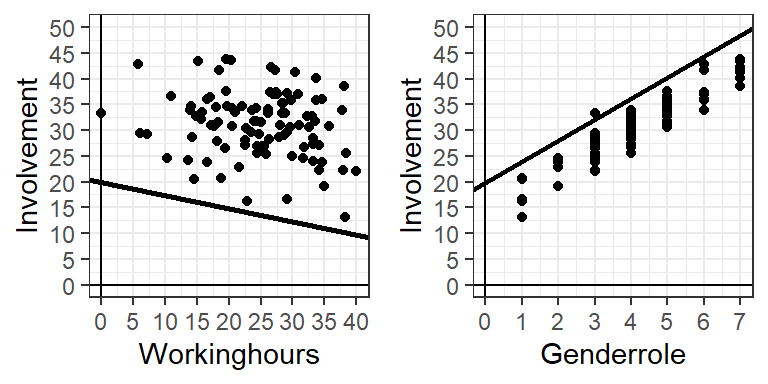
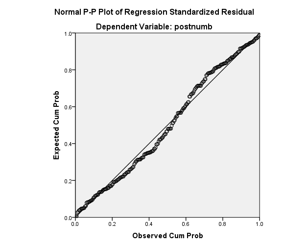

Lecture 9 - Multiple linear regression
Caspar J. van Lissa
31 Oct 2022
MLR recap
Multiple regressie
Regression with multiple predictors
Answers the question: What is the effect of one predictor, keeping all other predictors equal to zero (= controlling for)?
Multiple regression
Model is built up of “blocks” of the form \(+b*X\)
Add as many predictors as you want:
\(\hat{Y}_i = a + b_1*X_{1i}+ b_2*X_{2i} + b_3*X_{3i} + \dots + b_K*X_{Ki}\)
Parameters
\(\hat{Y}_i = a + b_1*X_{1i}+ b_2*X_{2i}\)
\(a\) is the \(\color{blue}{\text{intercept}}\)
- Predicted value when all X-es are equal to 0
- Value for someone who scored 0 on all X-es
\(b_1\) and \(b_2\) are \(\color{blue}{\text{slopes}}\)
- Every X gets a b
- b is how much Y increases for a 1-point increase in its X, while keeping all other X-es equal to 0
Two bivariate regression examples
Two simple bivariate regressions, \(\hat{Y}_i = a + b_1*X_1\)
Multiple regression example
One multiple regression, \(\hat{Y}_i = a + b_1*X_1 + b_2*X_2\)
Multiple regression example 2
It seems like the lines follow a pattern in the data, but somehow fall outside of the range of the data
That is not true: The effect of Workinghours is controlled for the effect of Genderrole, and vice versa.
Multiple regression 3D plot
Centering
\(a\): The \(\color{blue}{\text{intercept}}\), predicted values when all X-es are equal to 0
Bit inconvenient, because (almost) no-one works 0 hours, and nobody scores 0 on the 1-7 point Likert-scale for genderroles
Centering
So, we change the zero-point:
\(\text{Center}(Y_i) = Y_i - \bar{Y} = \text{observed - average}\)
Multiple regression after centering
Now the separate plots from multiple regression look like this:
Centering
- Pick a meaningful zero-point for the predictors
- For example, the mean
MLR Assumptions
Preliminary Checks
- DV has to be continuous (interval or ratio)
- Otherwise use another model (not part of this course)
- Ratio of cases to predictors (N > p)
- Larger samples -> More accurate estimates
- Minimum N depends on effect size (large effects, fewer cases)
- Rule of thumb
- 10 to 15 cases per predictor (but really: much much more)
Assumptions
- Independent observations
- Each observation conveys unique information
- Linearity
- Linear relationship between Y’ and the predictors.
- Normality
- Residuals are normally distributed
- Homoscedasticity
- Residuals are equally distributed for all values of predictors
- Model correctly specified
- Direction of causality
- No omitted confounders, interactions, nonlinear effects
- No multicolinearity
Assumptions regression
- Model is only valid if assumptions are met
- If assumptions are violated, our model misrepresents the data, and is uninterpretable
- Tests may be misleading
- Inferences not justified.
- We need to check assumptions
- But no evidence of violation is not the same as evidence of no violation
Independent observations
- Scores should be independent of one another
- Every observation conveys unique information
- If your observations are dependent, your “effective sample size” is lower
- This causes you to underestimate uncertainty about estimates
- Assumption is satisfied with simple random sampling.
Independent observations
- Examples of violations:
- Cheating on an exam
- Married couples
- Children within the same class (same teacher, background, etc)
- If you know why cases are dependent, there are solutions (not part of this course)
Linearity
- Visual check
- Scatterplot: do the points follow a straight line?
Linearity 2
- Residual plots

Linearity 2
Correcting:
- Data transformation (e.g., square or square root of predictor) or using non-linear regression (e.g., logistic regression; lectures 12&13 for major B&E).

Normal residuals
Why are residuals normally distributed?
- Because they are the result of many random processes
https://www.youtube.com/watch?v=6YDHBFVIvIs&feature=youtu.be&t=6
Assessing normality
- Histogram, “Normal P-P plot”
- Kolmogorov-Smirnov, Shapiro-Wilkes test
Normality: Visual inspection


Homoscedasticity
- Distribution of residuals \(\epsilon_i\)
- equal variance for all predicted scores
- Residual plot:
- Y: standardized residuals
- X: standardized predicted values
Homoscedasticity plots

Outliers
Outliers can violate normality and/or homoscedasticity
Outliers
- Types of outliers: How to detect them:
- in y-space : Standardized residuals > 3.3
- in x-space : Mahalanobis distance > ~12
- in xy -space : Cook’s distance > 1
- These distance measures can be obtained from regression in SPSS
Outliers in y-space
- Standardized residuals
- Poorly predicted cases
- If residuals are normally distributed…
- … only 1 in 1000 should exceed (-3.3, +3.3)
- If N = 100, and one residual is 7.4, that is unusual
Outliers in x-space
- Mahalanobis _ distance _
- Extreme score on predictor
- Or on combination of predictors
- Large value indicates outlier
- Cutoff depends on # predictors
- Extreme score on predictor
Exact critical values
- 1 predictor: 10.82
- 2 predictors: 13.81
- 3 predictors: 16.26
- 4 predictors: 18.46
- 5 predictors: 20.51
Outliers in xy-space
Outliers in xy-space can seriously affect your conclusions!
Outliers in xy-space
- Cook’s distance
- Outlier in terms of both outcome and predictors
- Rule of thumb: Cook > 1
Example
Example
Example

Example

Example
Example

Reasons for outliers
- Typo or miscoded missing value
- Solution: fix the mistake
- Not a member of the intended population
- E.g., student of 60 years old
- Solution: Remove from analysis (and explain why)
- Sensitivity analysis: With vs without the outlier(s)
- Hope it does not affect your conclusions
Multicollinearity
- When predictors are associated
- And predict the same variance in the DV
- Diagnosis: variance inflation factor (VIF) or Tolerance (1/VIF)
- Rule of thumb
- VIF > 10 implies serious problem
- Tolerance > 5 implies potential problem
Multicollinearity example
Multicollinearity
- How to fix multicollinearity:
- Increase the sample size
- Remove multicolinear predictors (except one)
- Combine predictors
Dealing with assumption violations
- Independent observations
- Account for group membership (not part of course)
- Linear effects
- Transform variable (square, square root)
- Normality of residuals
- Increase sample size
- Use different outcome distribution (e.g., binomial)
- Use non-parametric approach
- Remove outliers
- Homoscedasticity
- Account for source of heteroscedasticity
- Use non-parametric approach
- Model correctly specified
- Check direction of causality
- Include all confounders, interactions, nonlinear effects
- No multicolinearity
- Check VIF, remove or combine redundant variables
Interpreting multiple regression
Example
Does father involvement explain children’s reading performance after controlling for mother involvement and number of books in the home?
Conceptual model
Preliminary checks
| Father | Books | Mother | Reading | |
|---|---|---|---|---|
| Father | 1.00 | 0.05 | 0.21 | 0.16 |
| Books | 0.05 | 1.00 | 0.03 | 0.14 |
| Mother | 0.21 | 0.03 | 1.00 | 0.25 |
| Reading | 0.16 | 0.14 | 0.25 | 1.00 |
Preliminary checks
Outlier checks
| Father | Books | Mother | Reading | Mahalanobis | std_res | cook |
|---|---|---|---|---|---|---|
| 1.98 | 554 | 100.00 | 4 | 261.62 | -3.1499990 | 23.38 |
| 10.08 | 567 | 13.23 | 33 | 218.11 | 14.7575598 | 0.21 |
| 20.00 | 742 | 9.11 | 1 | 12.94 | -1.8829356 | 0.03 |
| 20.00 | 879 | 20.00 | 6 | 12.01 | 0.1583782 | 0.00 |
| 13.33 | 0 | 13.77 | 1 | 10.47 | -1.3177064 | 0.01 |
| 18.71 | 148 | 10.36 | 5 | 10.05 | 0.5907502 | 0.00 |
Analysis
| Model | R | R square | Adjusted R square | Std. Error of the Estimate |
|---|---|---|---|---|
| 1 | 0.68 | 0.46 | 0.45 | 0.83 |
- Multiple regression: Multiple \(R^2\)
- Does the model (inc. all predictors) explain significant variance in the outcome?
- Proportion explained variance
\(R^2_{y,x_1-x_k} = \frac{RSS}{TSS}\)
ANOVA
| Model | Sum of Squares | df | Mean square | F | Sig |
|---|---|---|---|---|---|
| Regression | 227.42 | 3 | 75.81 | 90.89 | 0 |
| Residual | 270.23 | 324 | 0.83 | ||
| Total | 497.66 | 327 |
Model test
- Formulate hypotheses:
\(H_0: \rho^2_{y,x_1-x_k}=0\) \(H_1: \rho^2_{y,x_1-x_k}>0\) \(\alpha =.05\)
- Write down F, both df and p
- Is p smaller than \(\alpha\)?
- Draw conclusion
Reporting
The regression model explained a significant proportion of the variance in the outcome, \(R^2 = 0.46, F(3, 324) = 90.89, p < .001.\) This means that father involvement, mother involvement, and books in the home together explained 45.7% of the variance in children’s reading performance.
Coefficients
| Model | B | Std. Error | Beta | t | Sig. |
|---|---|---|---|---|---|
| (Constant) | 0.89 | 0.22 | 0.00 | 4.04 | 0.00 |
| Father | -0.02 | 0.02 | -0.05 | -1.13 | 0.26 |
| Books | 0.00 | 0.00 | 0.16 | 3.96 | 0.00 |
| Mother | 0.24 | 0.02 | 0.67 | 14.28 | 0.00 |
Fill out the formula:
\(Reading_i=-0.02*Father_i+0.00*Books_i+ 0.24*Mother_i+\epsilon_i\)
Testing coefficients
- Is there a unique effect of \(X_.\), controlling for all other \(X\)-s?
- Formulate hypothesis
\(H_0: \beta =0\) \(H_1: \beta \neq 0\) \(\alpha = .05\)
- Write down \(\hat{B}\), \(t\), \(df\), and \(p\)
- Is p smaller than \(\alpha\)?
- Draw conclusion
Reporting
After controlling for mothers’ involvement and number of books in the home, fathers’ involvement had a non-significant effect on children’s reading performance, \(b_{father} = -0.02, t(324) = -1.13, p = 0.26\) This means that, for every extra hour of father involvement, children’s reading performance was -0.02 points worse.
Variable importance
| Model | B | Std. Error | Beta | t | Sig. |
|---|---|---|---|---|---|
| Mother | 0.24 | 0.02 | 0.67 | 14.28 | 0.00 |
| Books | 0.00 | 0.00 | 0.16 | 3.96 | 0.00 |
| Father | -0.02 | 0.02 | -0.05 | -1.13 | 0.26 |
- Which predictor is the most important?
- So… are fathers unimportant? Harmful?
Multicolinearity
Ask for the VIF:
| Model | B | Std. Error | Beta | t | Sig. | VIF |
|---|---|---|---|---|---|---|
| (Constant) | 0.89 | 0.22 | 0.00 | 4.04 | 0.00 | |
| Father | -0.02 | 0.02 | -0.05 | -1.13 | 0.26 | 1.33 |
| Books | 0.00 | 0.00 | 0.16 | 3.96 | 0.00 | 1.00 |
| Mother | 0.24 | 0.02 | 0.67 | 14.28 | 0.00 | 1.33 |
- No multicolinearity!
As a Venn diagram

Compare bivariate regression
| Model | R | R square | Adjusted R square | Std. Error of the Estimate |
|---|---|---|---|---|
| 1 | 0.29 | 0.08 | 0.08 | 0.36 |
| Model | Sum of Squares | df | Mean square | F | Sig |
|---|---|---|---|---|---|
| Regression | 41.87 | 1 | 41.87 | 29.95 | 0 |
| Residual | 455.79 | 326 | 1.40 | ||
| Total | 497.66 | 327 |
Coefficients
| Model | B | Std. Error | Beta | t | Sig. |
|---|---|---|---|---|---|
| (Constant) | 2.86 | 0.19 | 0.00 | 15.34 | 0 |
| Father | 0.10 | 0.02 | 0.29 | 5.47 | 0 |
Father’s involvement DOES predict reading, but the UNIQUE effect (controlling for mother and books) is not sig.
I created fake data, so I know that there is a true effect - it’s just too small to be sig. with this sample size
Check for yourself if you want:
lecture_9_-_Reading.sav